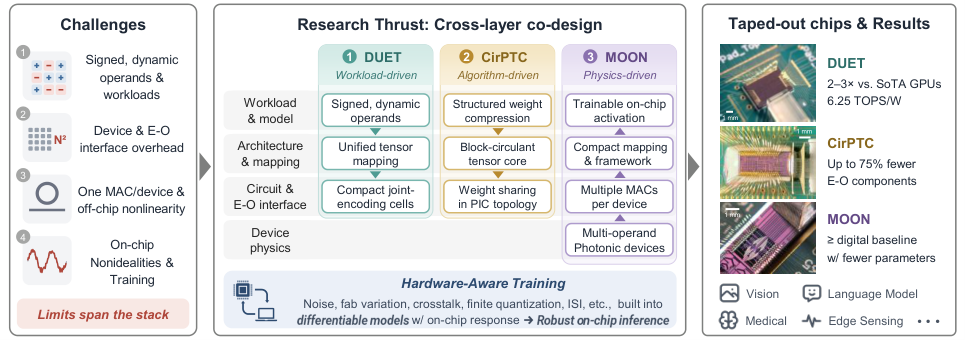
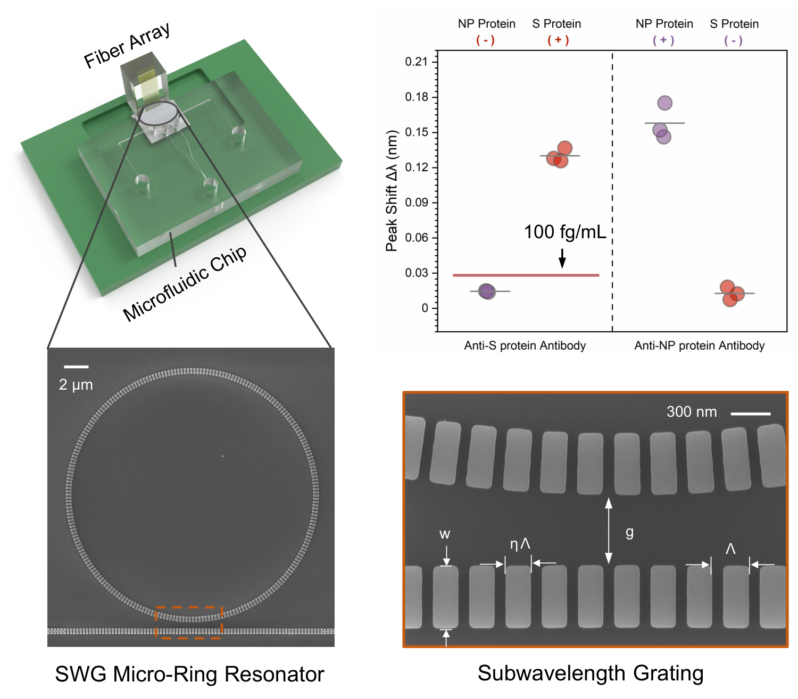
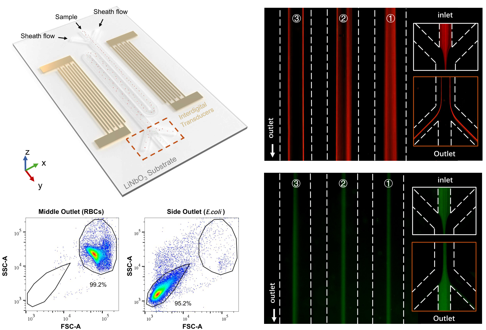

From Physical Principles To Integrated Systems
Research
My research harnesses physical interactions through device-system co-design. Across computing and bioanalysis, I seek to turn new physical capabilities into compact, useful systems—from device concepts to fabricated hardware and experimental demonstrations.
Photonic Computing
Integrated photonics offers bandwidth, parallelism, and low-latency signal propagation. Realizing these advantages in AI systems requires coordinated choices across device physics, circuit topology, interfaces, architectures, and learning algorithms.


General-Purpose Photonic Tensor Operations
The dynamic universal encoding tensorcore (DUET) directly processes pairs of signed, dynamic vectors in compact computing cells. Joint encoding and physical-domain accumulation reduce the overhead of separate signed paths and nonlinear operand remapping. A unified tensor-mapping scheme supports diverse AI operators, with on-chip demonstrations covering image classification, medical image segmentation, and attention operations.
Structured Models, Efficient Hardware
The block-circulant photonic tensor core (CirPTC) embeds structured weight sharing directly into photonic circuit topology. Connecting model compression with hardware architecture reduces trainable parameters, active electro-optic components, and memory requirements by up to 75%, with only marginal accuracy loss in the reported experimental tasks.
Computing With Intrinsic Device Physics
Multi-operand optical neurons (MOON) use independently controlled modulation regions within a single device to combine multiple inputs. Their intrinsic transfer functions provide tunable nonlinear responses. This work explores how device behavior and model training can be designed together, alongside hardware-aware training that accounts for measured responses and implementation nonidealities.
Nanophotonics, 2024 · CLEO, 2025
Integrated Microsystems
Compact bioanalytical systems must coordinate sample handling, target interaction, and measurement. My work combines photonics, acoustics, and microfluidics to address these challenges at the device and system levels.
Multiplexed Photonic Biosensing
I developed a platform that combines subwavelength-grating microring resonators, microfluidic sample delivery, and fiber-optic interfaces. By extending the optical mode into analyte-filled gaps, the resonator strengthens light–matter interaction. The reported experiments differentiated SARS-CoV-2 and influenza A H1N1 antigens within 15 minutes without amplification, with a spike-protein detection limit of 100 fg/mL.


Acoustofluidic Sample Processing
I developed a serpentine acoustofluidic architecture that co-designs channel geometry with the pressure nodes of standing surface acoustic waves. Reusing the acoustic field across successive channel segments extends interaction time within a compact footprint. Experiments demonstrated high-throughput separation of bacteria from human blood cells.


Future Research Directions
My future research interests include:
- Heterogeneous Computing Fabrics that combine optical parallelism, analog electronic processing, and digital programmability.
- Computing-Native Photonic Devices, developed through AI-assisted design and experimental feedback.
- Domain-Specific Photonic Processing within sensing and communication pathways.
- Active Bioanalytical Microsystems that coordinate sample preparation, manipulation, and detection.
- Coupled Optical–Acoustic Systems for integrated sensing, actuation, and information processing.